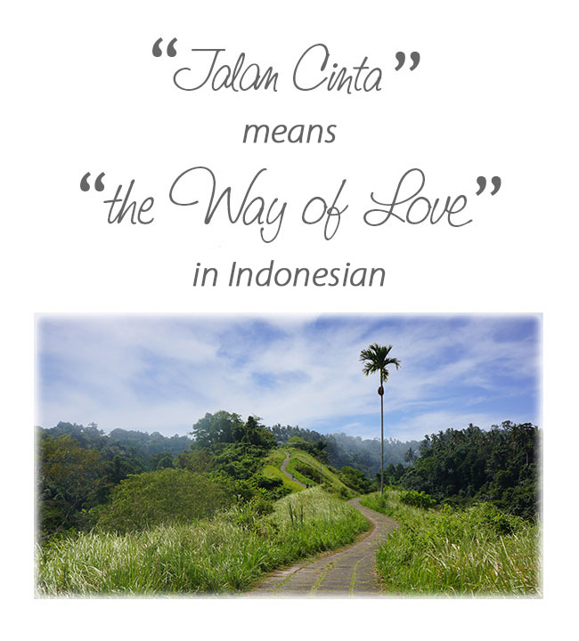

The intention is to create a palpably conscious and beautiful space, dedicated to loving our humanity and living our divinity. The question we ask is: What does it mean to live as Love? – in daily life, where “the rubber hits the road.”
We're excited and delighted to share our news with you about Jalan Cinta Sanctuary in beautiful Ubud, Bali. “Jalan Cinta” means “Way of Love” in Indonesian.
Divine conception has taken place. The sanctuary land has been secured. The site plan is emerging. Inspiration is unfolding. Gestation is underway…
To serve everyone from all walks of life through the power of love to:
Investing in your own villa. We are looking for beings who feel a connection and would like to invest in one of the Sanctuary Villas. These can be fully or partly lived in or not at all by the leaseholder – occupancy and return will be managed on your behalf.
Donations. We are seeking support by donation, whatever amount. Even $10 will be so very much appreciated.
Practical involvement. And when the sanctuary opens and projects unfold you may choose to be involved on a practical level.
This website is intended as an invitation to you to join us as Jalan Cinta Sanctuary births into form. It will also be a platform to share the ongoing journey with you.
